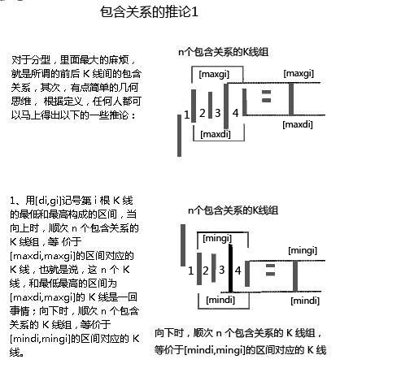
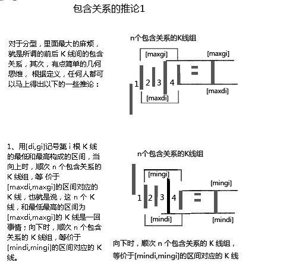
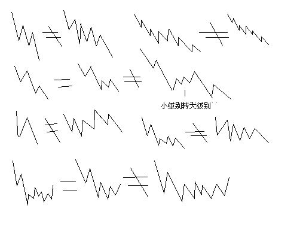
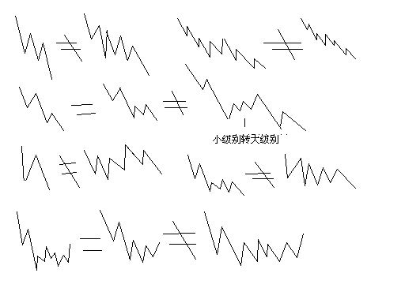

第75课：逗庄家玩的一些杂史1
Walter:
- 个股操作，涉及对合力产生影响的，无非两类资金，一种就是庄家，一种就是玩庄家的人
正文
原文链接 (2007-08-29 22:00:23)
当然，以下这些，都是本ID胡言乱语，梦话连篇，各位就当笑话看，谁当真谁有毛病。
说故事，不过让各位认识一下市场运行中一些更深层次的东西。走势是由合力构成的，但各分力后面代表的，都是真实的、有思想有感情的人，因此，了解一下一些心理层面的东西，还是有好处的。
当然，对于一般散户来说，多了解一点事情，并不能改变对走势完全严格客观的态度。为什么？因为对于一般的散户，其影响力对于合力可以完全忽略不算，因此，其操作，当然就可以完全只看合力最终的结果，而不需要关心每一刻合力所对应的各分力间的博弈。
但人必须有远大的目标，不想成为大资金的散户，就如同不想成为元帅的士兵。最终能否达到，这和每个人的悟性、修炼、机缘等等密切相关。但有时候结果并不一定太重要，过程往往更加美好。如果说到结果，任何人的结果都是咸鱼一条，因此 …
more ...

 



 
 1分钟图
1分钟图 5分钟图
5分钟图
 缠论原配图
缠论原配图